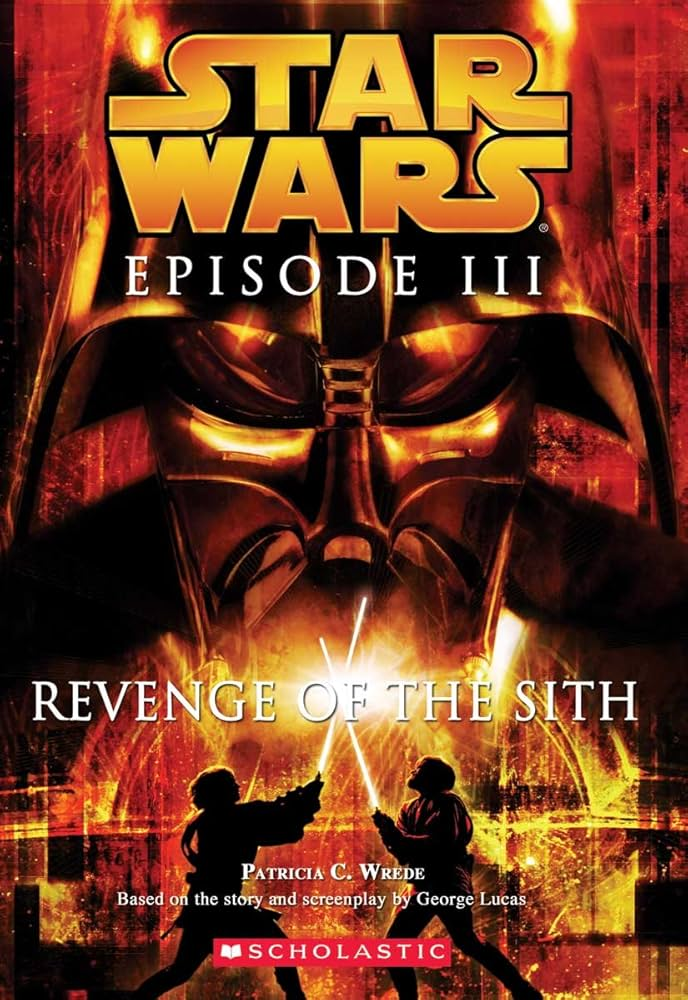
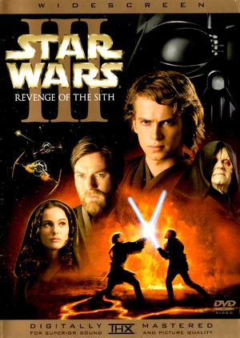
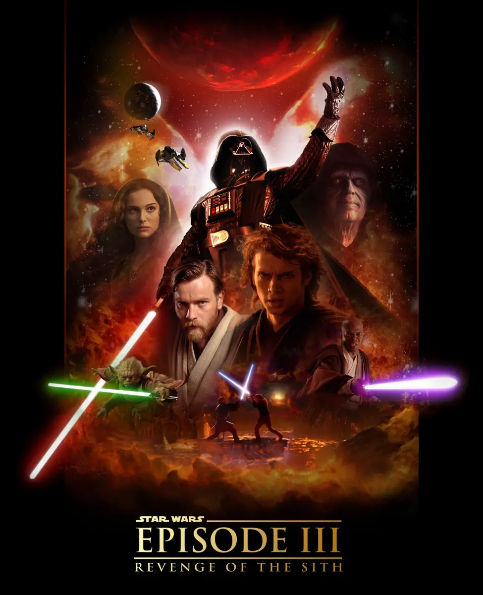

Revenge of the Sith
In *Revenge of the Sith*, the galaxy is ravaged by the ongoing Clone Wars. Jedi Knight Anakin Skywalker, once a hero of the Republic, is lured by Supreme Chancellor Palpatine to embrace the dark side of the Force. As Anakin falls to the temptation of power, he becomes Darth Vader, an agent of evil, turning against the Jedi, including his mentor, Obi-Wan Kenobi. The Jedi Order is systematically destroyed, and the Republic collapses, giving rise to the Galactic Empire. In a climactic battle, Obi-Wan confronts his former friend on the volcanic planet of Mustafar, leaving Vader grievously wounded and cementing the tragic fall of the Chosen One.




Characters